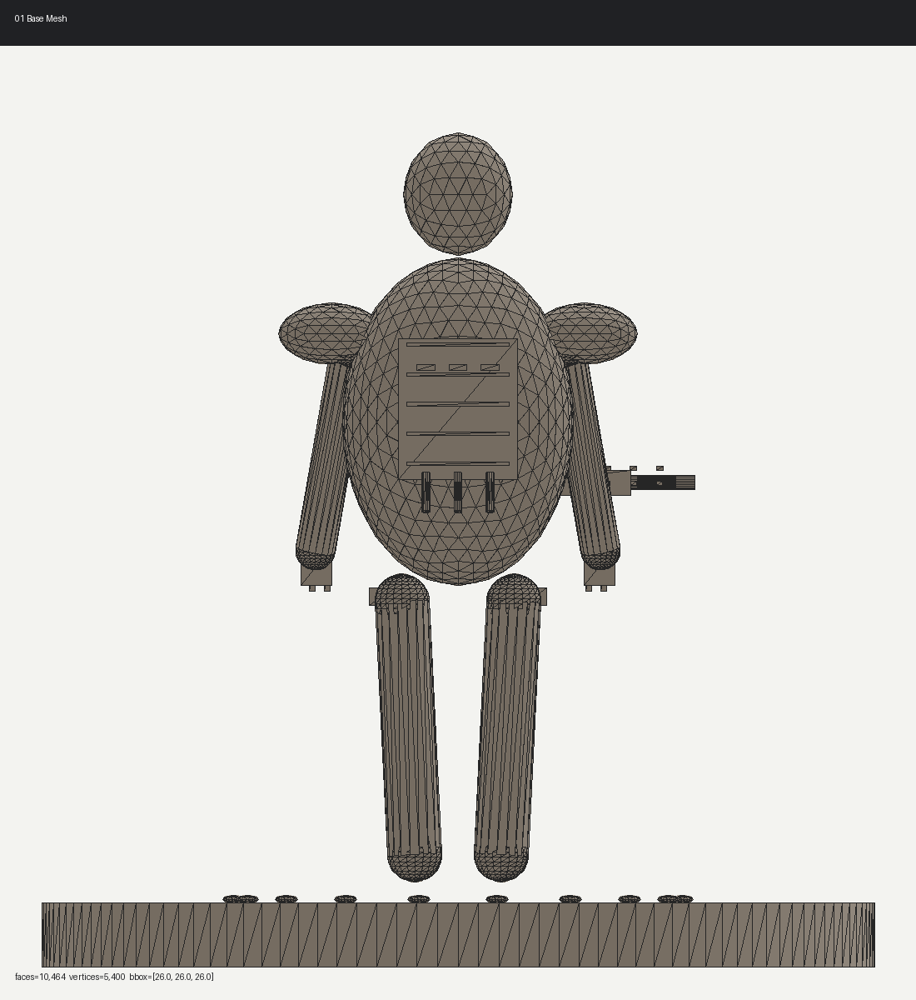
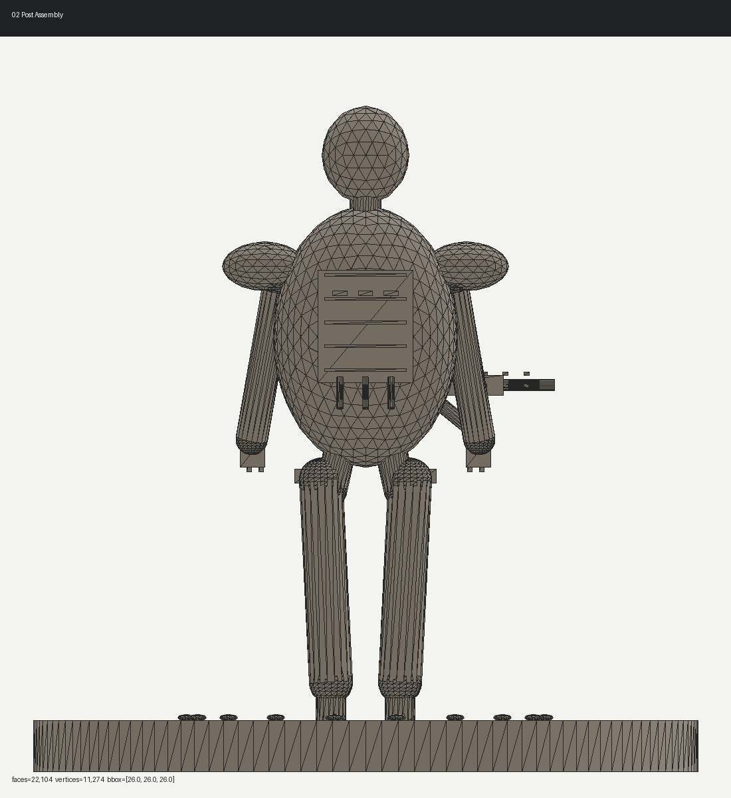
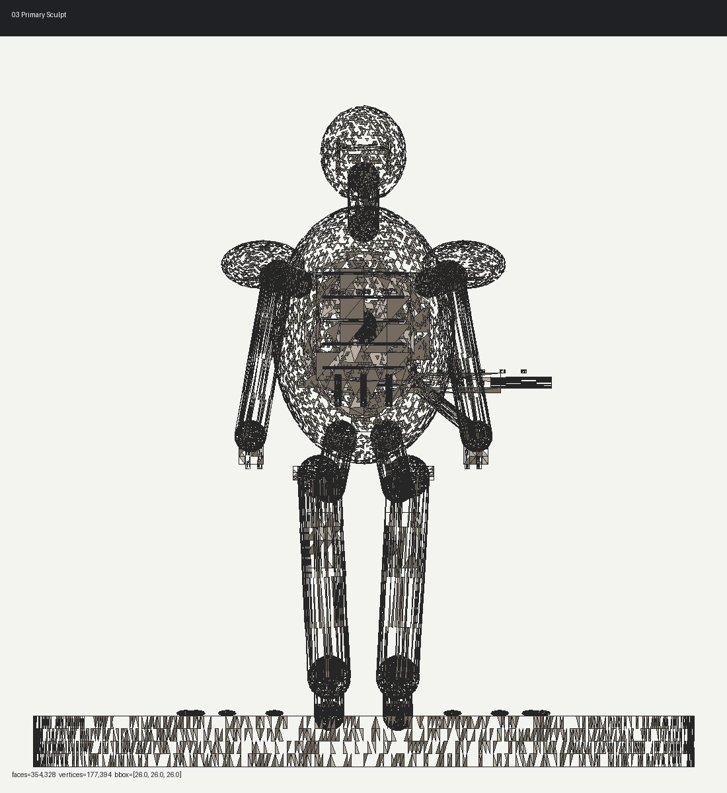
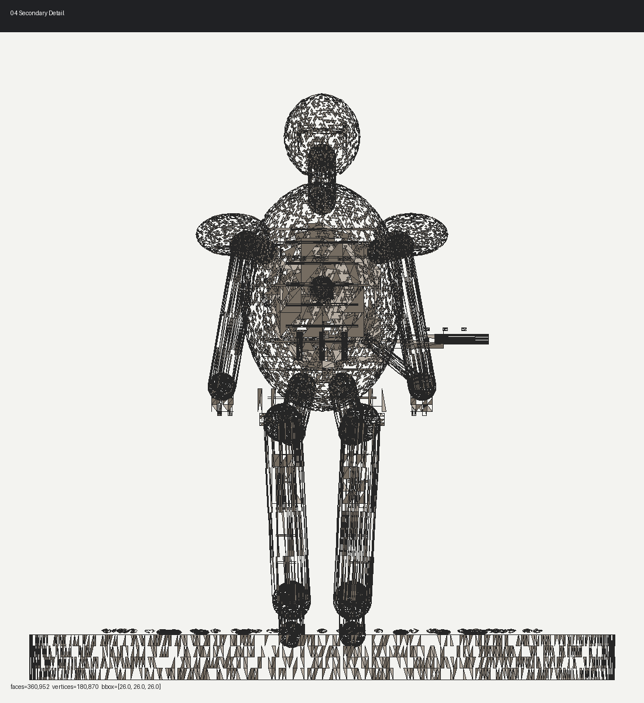
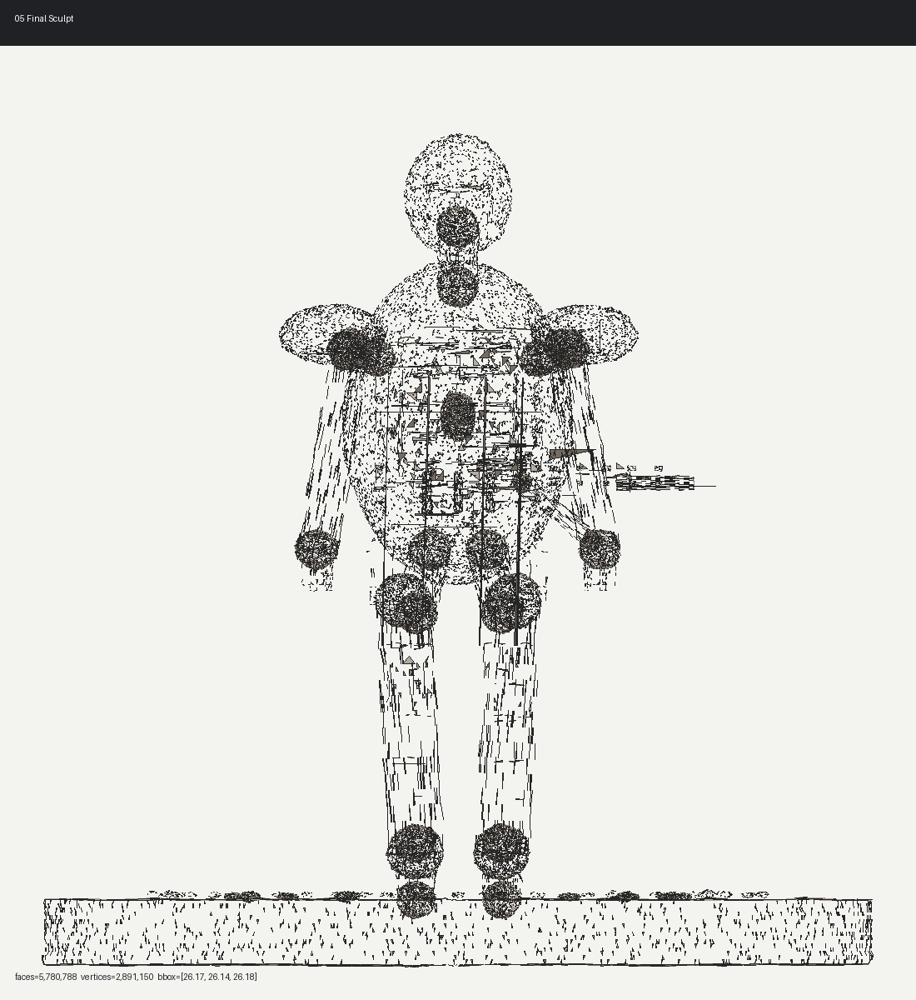
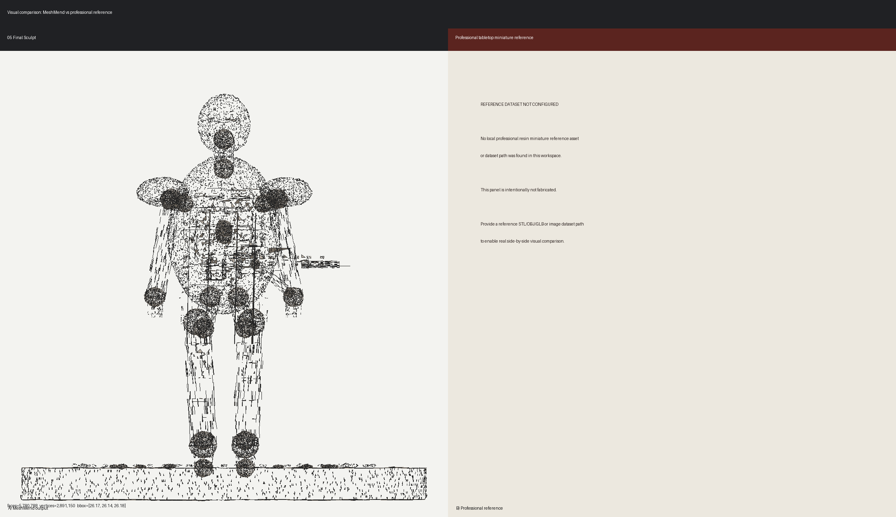

Prompt: original sci-fi heavy infantry veteran with rifle, helmet lenses, armor trim, vents, rivets, panel lines, cloth tabard, pouches, chains, skull trophy, insignia, surface wear
Evidence rule: DetailCritic scores are not used as evidence. This report shows stage renders, exported meshes, and geometry counts. Previous visual QA found generic/blockout appearance; this revision uses larger readable sculpt forms.
| Stage | Faces | Vertices | Objects | BBox mm | Detected detail geometry counts |
|---|---|---|---|---|---|
| 01_base_mesh | 10,464 | 5,400 | 40 | [26.0, 26.0, 26.0] | {
"armor_trims": 0,
"panel_lines": 0,
"rivets": 0,
"cloth_folds": 0,
"pouches": 0,
"insignia": 0,
"weapon_details": 0
} |
| 02_post_assembly | 22,104 | 11,274 | 67 | [26.0, 26.0, 26.0] | {
"armor_trims": 0,
"panel_lines": 0,
"rivets": 0,
"cloth_folds": 0,
"pouches": 0,
"insignia": 0,
"weapon_details": 0
} |
| 03_primary_sculpt | 354,328 | 177,394 | 113 | [26.0, 26.0, 26.0] | {
"armor_trims": 0,
"panel_lines": 0,
"rivets": 0,
"cloth_folds": 0,
"pouches": 0,
"insignia": 0,
"weapon_details": 0
} |
| 04_secondary_detail | 360,952 | 180,870 | 163 | [26.0, 26.0, 26.0] | {
"armor_trims": 14,
"panel_lines": 14,
"rivets": 14,
"cloth_folds": 0,
"pouches": 4,
"insignia": 0,
"weapon_details": 0
} |
| 05_final_sculpt | 5,780,788 | 2,891,150 | 251 | [26.1703, 26.143, 26.1835] | {
"armor_trims": 52,
"panel_lines": 26,
"rivets": 40,
"cloth_folds": 9,
"pouches": 8,
"insignia": 3,
"weapon_details": 17
} |





Professional reference is unavailable locally and is not fabricated.

{
"exported_file": "05_final_sculpt.stl",
"reloaded_face_count": 5780788,
"reloaded_vertex_count": 17342364,
"reloaded_bounding_box_dimensions_mm": [
26.1703,
26.143,
26.1835
]
}